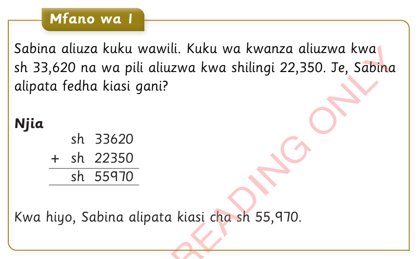
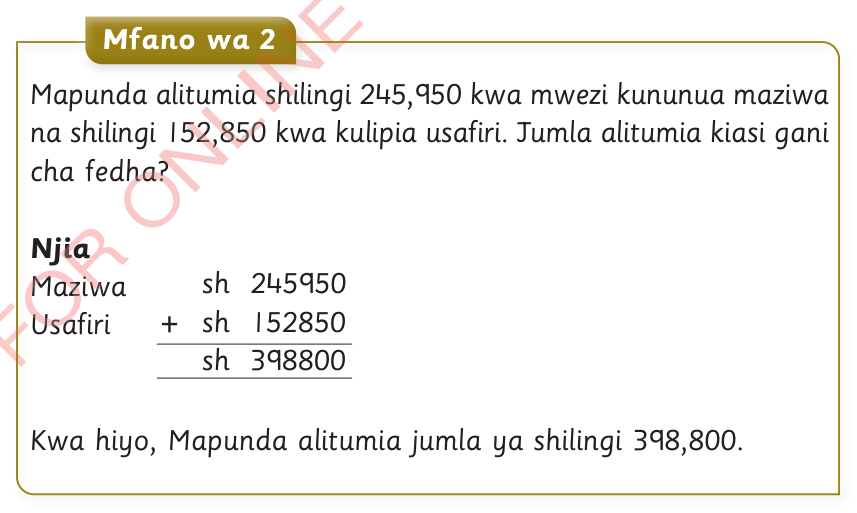

Mafumbo yenye dhana ya kujumlisha fedha
Mfano wa 1
Sabina aliuza kuku wawili. Kuku wa kwanza aliuzwa kwa sh 33,620 na wa pili aliuzwa kwa shilingi 22,350. Je, Sabina alipata fedha kiasi gani?
Njia
sh 33620
+ sh 22350
sh 55970
Kwa hiyo, Sabina alipata kiasi cha sh 55,970.

Mfano wa 2
Mapunda alitumia shilingi 245,950 kwa mwezi kununua maziwa na shilingi 152,850 kwa kulipia usafiri. Jumla alitumia kiasi gani cha fedha?
Njia
Maziwa sh 245950
Usafiri + sh 152850
sh 398800
Kwa hiyo, Mapunda alitumia jumla ya shilingi 398,800.
